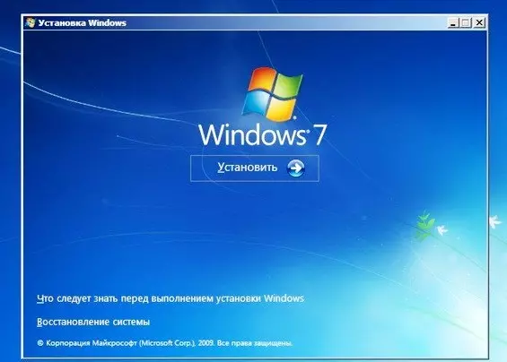
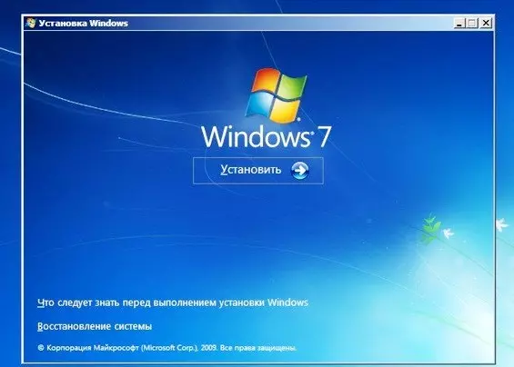

Операционные системы
1.Операционная система (ОС, OS, operating system) — это набор программ, обеспечивающих работу компьютера или другого устройства и взаимодействие с ним пользователя.
2.Операционная система состоит из:ядра, драйверов и пользовательский интерфейс(бывает графическим (GUI) и командным (CLI))
3.Виды операционных систем
Все существующие ОС можно классифицировать по нескольким признакам: разрядности, типу лицензии и области применения.
По разрядности делятся на 32-битные и на 64-битные.
По типу лицензии делятся на коммерческие и свободно распространяемые.
По облости применения делятся на серверные, клиентские и мобильные.
4.История развития операционных систем
История операционных систем насчитывает около 70 лет и делится на три этапа.
Первый этап (1955–1965 годы)
1955: Разработка GM-NAA I/O для IBM 704 инженером Робертом Л. Патриком и программистом Оуэном Моком. Эта система автоматизировала выполнение сложных математических вычислений.
1964: Появление ОС Multics, внедрившей концепции параллельной работы программ, виртуальной памяти и файловой системы на основе дерева каталогов.
Второй этап (1965–1980 годы)
1969: Разработка ОС Unix в Bell Labs. Она поддерживала язык C и протокол TCP/IP, предоставляя возможность многопользовательской работы.
1973: Создание первой графической ОС Alto OS компанией Xerox, которая имела оконную систему с элементами управления.
Третий этап (1980 — настоящее время)
1984: Выход системы System 1 для Macintosh от Apple, основанной на Alto OS.
1985: Microsoft выпускает Windows 1.0 как графическую оболочку для MS-DOS.
1991: Линус Торвальдс создает Linux на основе Unix, который становится основой для многих дистрибутивов.
2007: Появление iOS от Apple, проложившей путь к мобильным операционным системам.
2008: Выход Android OS, конкурента iOS, с открытым исходным кодом и возможностью кастомизации настроек.
Эти этапы демонстрируют эволюцию ОС от мейнфреймов до современных мобильных платформ.
5.Популярные операционные системы:Windows, macOS, Android и iOS.


 Операционная система является основой любого работающего компьютера и выполняет ряд ключевых функций:
Управление оборудованием (приём микрокода от BIOS, диагностика неисправностей, обеспечение связи между программами и устройствами).
Управление программами (установка, удаление, запуск приложений и обеспечение их взаимодействия с аппаратурой).
Управление файлами (создание, перемещение, удаление файлов и каталогов).
Создание пользовательского интерфейса (графический интерфейс или командная строка для управления компьютером).
Основные компоненты Windows
Windows построена вокруг трёх главных блоков:
Shell (программная оболочка):
Интерфейс взаимодействия пользователей и приложений с системой.
Включает файловый менеджер (File Explorer), Панель управления, окно свойств системы и другие элементы графического интерфейса.
Kernel (ядро системы):
Отвечает за низкоуровневое управление оборудованием.
Содержит слой аппаратных абстракций (HAL) и исполнительные службы.
Обеспечивает стабильность работы путем ограничения прямого доступа программ к оборудованию.
Данные конфигурации:
Реестр Windows хранит настройки программ, устройств и предпочтений пользователя.
Файлы инициализации (.ini, .inf) дополняют конфигурационные данные.
Как Windows управляет программами?
Процесс запуска программы включает следующее:
Программы хранятся на жестком диске или флеш-накопителе.
При запуске часть файла программы загружается в оперативную память, образуя процесс.
Каждый процесс состоит из одного или нескольких потоков, каждый из которых представляет отдельную задачу (например, открытие документа, печать текста).
Процессы взаимодействуют с системой через подсистему Win32, обеспечивая связь с оборудованием и системными сервисами.
Таким образом, статья даёт новичкам общую картину принципов работы Windows, подчёркивая роль оболочки, ядра и реестра в обеспечении функционирования современных компьютеров.

Операционная система является основой любого работающего компьютера и выполняет ряд ключевых функций:
Управление оборудованием (приём микрокода от BIOS, диагностика неисправностей, обеспечение связи между программами и устройствами).
Управление программами (установка, удаление, запуск приложений и обеспечение их взаимодействия с аппаратурой).
Управление файлами (создание, перемещение, удаление файлов и каталогов).
Создание пользовательского интерфейса (графический интерфейс или командная строка для управления компьютером).
Основные компоненты Windows
Windows построена вокруг трёх главных блоков:
Shell (программная оболочка):
Интерфейс взаимодействия пользователей и приложений с системой.
Включает файловый менеджер (File Explorer), Панель управления, окно свойств системы и другие элементы графического интерфейса.
Kernel (ядро системы):
Отвечает за низкоуровневое управление оборудованием.
Содержит слой аппаратных абстракций (HAL) и исполнительные службы.
Обеспечивает стабильность работы путем ограничения прямого доступа программ к оборудованию.
Данные конфигурации:
Реестр Windows хранит настройки программ, устройств и предпочтений пользователя.
Файлы инициализации (.ini, .inf) дополняют конфигурационные данные.
Как Windows управляет программами?
Процесс запуска программы включает следующее:
Программы хранятся на жестком диске или флеш-накопителе.
При запуске часть файла программы загружается в оперативную память, образуя процесс.
Каждый процесс состоит из одного или нескольких потоков, каждый из которых представляет отдельную задачу (например, открытие документа, печать текста).
Процессы взаимодействуют с системой через подсистему Win32, обеспечивая связь с оборудованием и системными сервисами.
Таким образом, статья даёт новичкам общую картину принципов работы Windows, подчёркивая роль оболочки, ядра и реестра в обеспечении функционирования современных компьютеров.
